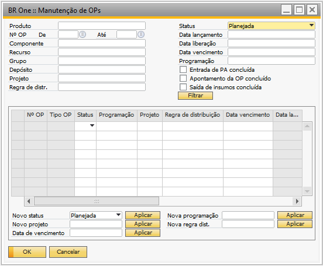
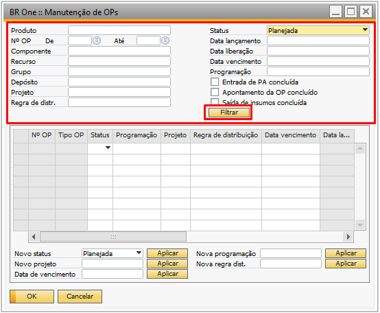
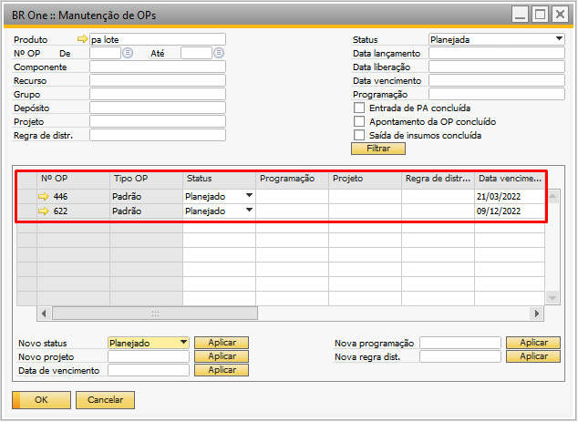
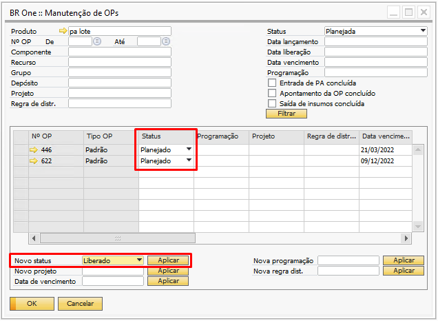
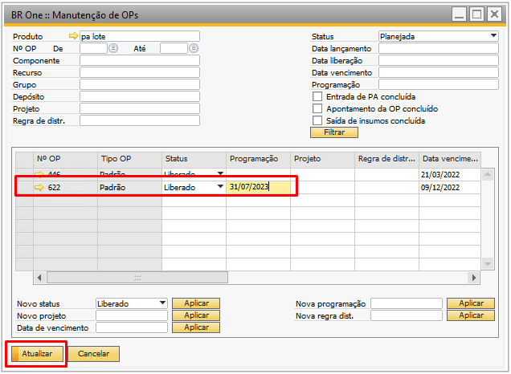
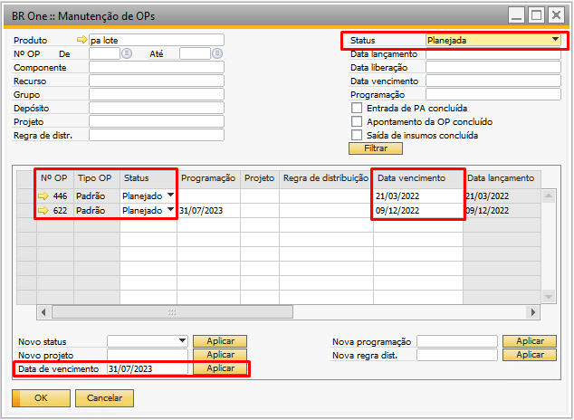
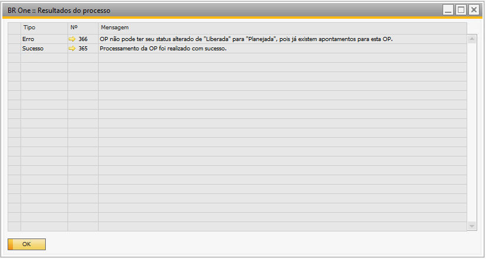

Manutenção de OPs
Para acessar a tela de Manutenção de OPs é necessário ir no menu:
Produção -> Manutenção -> Manutenção de OPs
A Manutenção de OPs é um utilitário para facilitar a troca de status de OPs em lotes ou individualmente.
{kind=link}
O cabeçalho tela “Manutenção de OPs” consiste em filtros de busca. Após ter preenchido os filtros desejados, basta pressionar o botão Filtrar.
{kind=link}
Na gride é apresentado as OPs de acordo com o filtro selecionado:
{kind=link}
Para realizar as alterações em lotes, basta preencher os campos, com os dados desejados e clicar respectivamente no botão “Aplicar” de cada um dos campos.
{kind=link}
Os campos que podem ser alterados pela tela em lote são:
Status;
Projeto;
Data de vencimento;
Programação;
Regra de distribuição.
Ao preencher os dados e aplicar, as mudanças serão realizadas em lotes, ou seja, em todas as OPs filtradas anteriormente.
Para realizar as alterações individualmente, basta clicar nos campos que deseja alterar, diretamente na linha da OP, e clicar em “Atualizar”.
{kind=link}
Ao preencher os dados nos campos possíveis diretamente na linha da OP desejada, ela será alterada individualmente.
Importante salientar que o campo “Data de vencimento” apenas poderá ser alterado individualmente ou em lote quando as OPs estiverem com o status “Planejada”.
{kind=link}
OPs com status planejadas podem ter a “Data de vencimento” alteradas em lotes ou individualmente.
Depois que as alterações desejadas forem realizadas, basta pressionar o botão ‘Atualizar’ para salvar.
Após realizar todas as operações, será exibido um log com os resultados onde mostrará as linhas que tiveram sucesso e as linhas que tiveram erro na atualização.
{kind=link}
Todas as mensagens de validação que tenham ação Sim/Não do usuário (ao alterar o status da OP).

Exibirão os botões Sim p/ todos e Não p/ todos.
Não é possível fechar uma OP caso o usuário logado não possuir a licença e permissões necessárias para realizar fechamentos contábeis ou caso uma OP tente ser fechada sem que o usuário logado e o usuário adicional não possua as devidas licenças.

BR One:: Nenhuma licença SAP
Nesse caso será exibida a seguinte mensagem de erro: “Nenhuma licença SAP”
Caso uma OP tente ser fechada sem que o usuário logado e o usuário adicional não possua autorização para realizar lançamento contábil manual, caso uma OP tente ser fechada sem que o usuário logado e o usuário adicional possua autorização para realizar reavaliação do estoque ou caso uma OP tente ser fechada sem que o usuário logado não possua licenças ou autorização para realizar lançamento contábil manual e não haja nenhum usuário adicional cadastro.

BR One:: Usuário não possui autorização para realizar lançamentos contábeis

BR One:: Usuário não possui autorização para realizar reavaliação do estoque.

BR One:: Não existe usuário configurado para o fechamento da ordem de produção